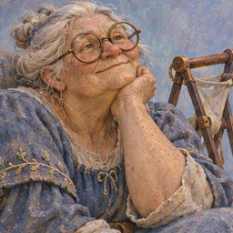
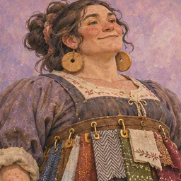
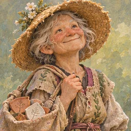
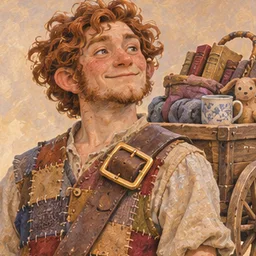

Вы согласились побыть ладонными гостями в доме великанши Вельды. Теперь пуговица служит щитом, столовая ложка — мостом, а обычный переезд становится приключением среди падающих складок и огромных коробок. Маленькие мастера уже решили ехать с хозяйкой и поручают вам перевезти их общее творение — ажурную витрину «Дом на раскрытой ладони». Сборщик Тен настаивает на плотной стандартной укладке. Заработайте помощь артели, буфетной стражи и мотыльковых всадников, испытайте свой способ и проведите хрупкую работу через гигантский день погрузки.

Если партия изменила план
Перед чтением вступления сверьте место героев, присутствующих людей и предметы с итогом прошлого вечера. Если условия встречи отпали, сыграйте последствия там, где находится партия. Событие по расписанию может произойти за кадром. Герои узнают о нём от тех, кто был на месте.
Вечер 7. Если жильцы отказались везти витрину
Дайте каждому выбрать один плоский образец, который отправится в дорогу, и подписать, чей он. На следующее утро разыграйте переезд этих вещей. Большой ящик остаётся там, где его оставили хозяева.
Группа отказалась от задания
Решать за авторов не будем. Станем держать открытым проход для мастеров, которые повезут свои работы сами. Узнаём у двух мастерских, как они сами хотят везти свои работы. Несколько мастеров выбирают путь сами. Свои работы подписывают авторы, остальные места на столе остаются свободными.
Игроки раскрыли тайну раньше
Сравним пробные узлы с процарапанной схемой двух выходов и спросим мастеров, о чём они договорились до нашего прихода. Доступные свидетельства — Журнал пробных узлов, Схема двух выходов. Одна длинная связка увлекает соседние пакеты. Два независимых пути и лёгкие подвесы позволяют разделить груз. Проверяем подвеску порознь и проходим второй дорожкой. Показываем мастерам и Кему, как развести подвесы и очередь по двум дорожкам. Дальше решают авторы витрины; героям не нужно выбирать форму за них.
Партия уступила поле
Хранители не отдали ленту. Секция стола осталась незакреплённой. Встречаем отставших с теми пакетами, что удалось вынести. Убираем хрупкие детали из этой секции и помечаем её на чертеже. К погрузке предъявляем только закреплённые части витрины.
Карман ведущего
Для игры без подготовки: что говорят люди, места в стороне от главной дороги и прохожие. Пометки о правде слухов — только для ведущего; сказанное за столом становится фактом мира, лишь когда вы его подтвердите.
Слухи
«Хозяйка переезжает не от беды, а от лестницы: ступеньки ей стали круче горы. А мы все за ней — адреса давно выбраны, узлы увязаны».
Правда. Так и есть: Вельда переезжает ради удобства, жители заранее выбрали места рядом с ней, простой пеший выход согласован. Слух помогает сразу снять мысль, будто героям нужно кого-то расселять: кампания о перевозке творений, а не жилья.
«Гостевая скатерть, говорят, от чиха возвращает рост. Потому у кромки все ходят, зажав нос, а кто простужен — обходит её сторонкой».
Неправда. Шутка соседей. Ткань меняет рост только того гостя, кто встал на неё и вслух назвал свой выбор; случайно никто не вырастает и не уменьшается. Арда со смехом прочтёт вышитое правило, если кто-то поверит.
«Мел на ножках стола — не баловство. Большие рисуют дугу на всём, что понесут не так, как оно стоит».
Правда. Это обычай переезда в доме; Арда скажет то же в первом вечере. Вывода о том, куда при повороте ляжет нагрузка, слух не даёт: его герои получают сами, поворачивая бумажный стол.
«Тену только покажи жёлтую нитку — он и шкаф в ящик уложит, и хозяина сверху крышкой накроет».
Неправда. Насмешка мастериц с террас. Тен берёт только то, что владелец сам отметил, читает приписки и останавливается при ясном отказе. Пусть он невозмутимо опровергнет слух во втором вечере и покажет, как читает бирку до последней строчки.
«Мотыльки на карнизе садятся не на всякого. Кто их кормом пахнет — к тому и летят, а блестящего боятся, как огня».
Отчасти правда. Правда в том, что мотыльки выбирают мягкую матовую площадку со знакомым запахом и пугаются блестящей жести; Сила открыто покажет это в пятом вечере. Неправда — что они выбирают человека: решают спокойная посадка и отдых животного, а не всадник.
«Порог во дворе старше самого дома. Его привезли с прежнего места ещё при Вельдином деде — оттого он такой высокий, что о него и великаны спотыкаются».
Отчасти правда. Кем подтвердит в шестом вечере, что порог старше дома и привезён с прежнего места. Про спотыкающихся великанов — преувеличение: Кем не спотыкается, он просто всегда меняет хват на пороге.
«Кем только с виду неуклюжий, а коробку несёт, как яйцо. Зато шляпу свою он оставил на всех косяках этого дома».
Правда. Правда и приятная деталь: Кем бережный переносчик, а шляпа измята о дверные косяки. Сам он шутит, что знает дом по косякам. О сигналах и опорах слух ничего не говорит — это герои выясняют с ним в четвёртом и шестом вечерах.
«Если витрина не доедет целой, мастера рассорятся навек, а хозяйка отменит новоселье».
Неправда. Неправда. Авторы сами решают судьбу работы: целая витрина, видимые швы или сохранённые образцы — все три исхода честные, и новоселье состоится. Жители в любом случае доберутся до выбранных мест. Слух полезен, чтобы снять лишний страх перед ошибкой.
«Ложку под мост хозяйка подарила буфету давным-давно и с тех пор пьёт чай другой. Ту она так и зовёт — соседской».
Правда. Цвет к Буфетной площади: мост из ложки — давний дар Вельды соседям, как обрезки и нитки по уговору. Хороший повод для Бруна объяснить, почему на мосту не разминуться и кто по обычаю ждёт у круга.
«Буфетные огородники всё записывают на черепках. Бумага от полива раскисает, а глиняная запись и сто лет пролежит».
Правда. Так ведёт записи Песка Листовая и её соседи. Удобный способ познакомить героев с Пеской на Буфетной площади; её черепки — наблюдения за растениями, а не тайные знаки.
«Говорят, хозяйка мелкого вовсе не видит: ладонники ей каждое утро ярлыки вслух читают».
Отчасти правда. Вельда действительно не различает мелких надписей со своего роста, но хорошо видит контрастные буквы высотой с ладонника на светлой бумаге — это объяснит Рем в четвёртом вечере. Утренних чтений нет, это шутка соседей.
Места в стороне
Сломанная игла
В нише книжной полки, между двумя тяжёлыми корешками, торчит из винной пробки старая сломанная игла. Говорят, ею шил первый мастер, поселившийся в этом доме. Перед трудной работой швеи привязывают к её ушку нитку своего цвета, и ниток там столько, что игла похожа на пёстрый куст. Чужие нитки отвязывать нельзя: это всё равно что отменить чужое обещание.
Скамейка на третьей ступеньке
Третья ступенька лестницы стёрта сильнее других: тут хозяйка обычно останавливается передохнуть. У стены, в тени перил, ладонники давно поставили скамейку — линейку на двух катушках. Сюда приходят посидеть, посмотреть, кто с какой ношей идёт вверх и вниз, и узнать новости о переезде. Над скамейкой на обоях карандашом отмечены чьи-то маленькие росты, и возле каждой черты подписано имя.
Сахарная лавка
У подножия сахарницы стоит прилавок из спичечного коробка, а весы сделаны из двух пуговиц на нитке. Сахар здесь не продают, а меняют: крупинку за заштопанный носок, горсть за вечер работы на сушильнях. Хозяйка о лавке знает и всегда оставляет крышку сахарницы чуть сдвинутой. Буфетные сладкоежки прибегают первыми, а последними — те, кто весь день таскал узлы.
Старая клякса
Чернильное пятно на упаковочном столе, размером с хорошую площадь, высохло так давно, что стало гладким, как стекло. У ладонников «у кляксы» значит «у главного места сбора»: здесь назначают встречи, ждут опоздавших и отсюда отсчитывают шаги. По преданию, клякса появилась, когда хозяйка подписывала свой первый переплёт и рука у неё дрогнула от радости.
Коробка находок
Под нижней ступенькой стоит обувная коробка с крупной надписью «Нашлось». Великаны кладут туда то, что выпало из карманов, а ладонники — то, что подобрали в щелях: пуговицы, напёрстки, огрызки карандашей. Каждый может взять нужное, оставив записку, что взял и зачем. Записок в коробке давно больше, чем вещей, и по ним можно узнать, кто чем занят в доме.
Ход за плинтусом
Узкий ход за плинтусом, по которому ладонники ходят из комнаты в комнату, не попадаясь великанам под ноги. Стены хода обклеены обрывками обоев разных лет, и по ним историю дома читают, как годовые кольца на срезе: розочки, полоски, синие кораблики. Кораблики — самые старые, их клеили ещё до Вельды. В ходу темно, поэтому каждый несёт с собой огарок в напёрстке.
Прохожие
Клёпа Сахарник
Круглый ладонник в переднике, белом от сахарной пыли; на шее у него висят весы из двух пуговиц на нитке.
«Крупинку за носок, горсть за вечер — честнее цены во всём доме нет!»
Может рассказать: Знает, что хозяйка нарочно оставляет крышку сахарницы чуть сдвинутой: это давний уговор с соседями, а не забывчивость.
Тиша с третьей ступеньки
Маленькая старушка в вязаной шали, с клубком на коленях; сидит на скамейке-линейке и вяжет, не глядя на спицы.
«Я тут сижу, чтобы видеть, кто с какой ношей идёт. Ноша про человека много скажет».
Может рассказать: Знает, что Вельда переезжает только из-за лестницы, и рада за неё: внизу и сад рядом, и ступенек нет.
Зеня Ленточник
Тощий подросток-ладонник с пёстрыми лентами, намотанными на запястья, в сапогах, стоптанных на одну сторону.
«Записку? Донесу до кляксы быстрее, чем вы скажете „донеси“!»
Может рассказать: Знает короткую дорогу от Катушечных террас к упаковочному столу — за плинтусом, по ходу со старыми обоями.
Матрёна Крахмальщица
Дородная ладонница с рукавами, жёсткими от крахмала; за ухом у неё торчит гусиное пёрышко для пробы кружева.
«Кружево без крахмала — что тесто без печи: форма есть, а держать нечем».
Может рассказать: Знает, что артель крахмалит кружевные крыши перед каждым праздником, а крышу для витрины Арда к новоселью накрахмалила дважды.
Пров Свечник
Сутулый ночной сторож с огарком свечи в напёрстке на шесте; ходит медленно и слушает, как скрипит дом.
«Ночью дом говорит громче, чем днём. Надо только самому не шуметь».
Может рассказать: Знает, что ночник у переплётного станка хозяйка оставляет гореть до утра: под ним ладонники читают и чинят, пока великаны спят.
Фрося Обойщица
Ладонница с кистью за поясом и руками в засохшем клейстере; на плече у неё рулон обойных обрезков.
«Каждый слой обоев — чьё-то десятилетие. Я подклеиваю, чтобы прошлое не отваливалось».
Может рассказать: Может показать в ходе за плинтусом обои с синими корабликами — самые старые в доме, их клеили ещё до Вельды.
За десять минут до первой игры
- Откройте первый вечер, прочитайте правду мира и участников. Остальные вечера — планы, их исход решают игроки.
- Выберите пакет под фактическое число игроков. Первые три героя — готовое ядро; остальные добавляются по порядку. Возраст игрока не определяет героя.
- Согласуйте темы, длительность и сигнал паузы. Передайте игрокам только players.html; раздатки выдавайте по отдельности после указанного открытия.
- Откройте Мастерскую проекта, создайте личный черновик и импортируйте выбранный JSON через загрузку пакета. Проверьте состав и начало в предпросмотре. Запуск кампании подтверждает ведущий штатным действием.
- Откройте иллюстрацию завязки отдельно. Портреты героев входят в файл для игроков, портреты встречных — в книгу ведущего. Тактические схемы доступны в разделе карт.
Формат и темы
8 вечеров; 150 минут: вступление и напоминание 15, три сцены по 35, перерыв 10 после второй сцены, закрытие и личный итог 20
Дом Медный Напёрсток стоит среди обычных человеческих и великанских поселений. Ладонники появляются там, где несколько поколений заботливо делают вещи руками; они выращивают еду, обменивают труд и получают материалы по договорённости с хозяевами. Они самостоятельные соседи, а не ожившие вещи. Волшебство гостевой скатерти уменьшает только добровольных гостей до ладонного роста вместе с личной одеждой и снаряжением; чужие жители и их дома не меняют размер вместе с гостем. Любой гость может вернуть свой рост, вслух выбрав это на расстеленной гостевой ткани; ткань можно попросить расстелить или развернуть самому. Возвращаться к малому росту можно тем же способом. Для задач приключения достаточно обычных навыков и домашних материалов.
Тёплое удивление, азарт изобретательной погрузки, спор мастеров и юмор масштаба; ошибки дают видимые швы и новые решения без унижения
- Находчивость и тактика среди гигантских домашних вещей
- Ремесло, авторское согласие на переделку, проверяемая надёжность
- Заработанные союзы, честные обещания и общение между масштабами
Границы
- Без жестокого обращения с детьми, телесного ужаса и подробностей травм; падение означает зацеп, потерянный груз или помощь, если группа заранее не выбрала иной тон.
- Не изображать ограниченную подвижность Вельды нравственным недостатком и не предлагать чудесное исцеление вместо её решения переехать.
- Перед первой игрой согласовать темы высоты, тесноты, насекомых и порчи дорогих сердцу вещей. Любой участник может сказать «пауза», убрать подробность либо пропустить сцену без объяснения; решение переносится в спокойный разговор.
- Животных не требуется ранить; работы не переделывают без согласия авторов. Переезд жителей и безопасный обычный выход не ставятся на кон ради сохранения витрины.
Люди за столом
- В начале каждой сцены меняйте первого говорящего по кругу. Взрослый не становится ведущим группы автоматически, возраст игрока не назначает персонажа или класс. Сначала каждый предлагает действие устно либо запиской; затем обсуждается общий план. Разрешён пас с возвращением в конце круга.
- Дайте каждому выбор на двух равных уровнях: конкретное «что берём и куда несём?» и углублённое «кто вправе решить за соседей?». Подростки и взрослые выбирают глубину сами; доступный вопрос не считается менее важным.
- Три первых героя образуют полноценное ядро. Герои четвёртого—восьмого мест дают дополнительные точки зрения, но ни один навык, предмет, класс или заклинание не служит ключом к сюжету. Все важные сведения доступны осмотром, просьбой или безопасной практической пробой без броска.
- При разделении группы создавайте не больше трёх задач, обходите каждую после одного значимого действия и соединяйте всех у названной точки возврата. На одном участке два героя могут одновременно удерживать, наблюдать и договариваться; решайте их действия одним общим последствием, сохраняя отдельные решения игроков.
- Ведите открытый бумажный лист погрузки: автор и согласие на переделку; предмет; нужная опора; маршрут; сигнал; принимающий; обещанный возврат материала. Отмечайте «испытано / лишь предложено / выполнено». Это заметки ведущего, не новые автоматические счётчики. Адреса жителей уже выбраны ими; кампания проверяет перевозку творений, а не распределение жилья.
- При отсутствии игрока его герой добровольно помогает в безопасном лагере; личные обещания, смену размера и финал этого героя не решают за него. Перед следующей встречей дайте краткий пересказ и возможность изменить ещё не исполненную личную договорённость.
- Отводите 15 минут на напоминание и согласие, 35 на каждую из трёх сцен, 10 на перерыв после второй сцены и 20 на итоги. Для восьми игроков используйте письменные предложения и пары; не увеличивайте число обязательных препятствий ради большей группы.
Масштабирование группы
3 игрока
Основная тройка испытывает, несёт и подтверждает передачу по очереди; на сцену одна рабочая точка и одна страховка. Союзник переносит пустые ёмкости по инструкции. В финале несколько коротких передач заменяют одновременный подъём; дополнительное украшение может остаться поздним грузом. В необязательном бою два противника, по 12 хитов.
4 игрока
Разделите подготовку на две пары: путь и груз, затем поменяйтесь задачами. Четвёртый герой может вести сигналы или опрос, его отсутствие не закрывает сведения. На общем возврате каждый называет одну цену плана. В необязательном бою три противника, по 14 хитов.
5 игроков
Две пары выполняют работы, пятый выбирает между связью, заботой о жителях и собственной разведкой; роль меняется каждую сцену, это не постоянный начальник. Объединяйте связанные действия пары в один исход. В необязательном бою три противника, по 16 хитов.
6 игроков
Три пары обслуживают опору, хрупкое творение и сигнализацию. После одного значимого действия обходите следующую пару; возврат — обозначенное знамя. Дополнительные руки позволяют сохранить больше выступающих деталей без обязательной новой угрозы. В необязательном бою четыре противника, по 18 хитов.
7 игроков
Две пары и тройка получают три связанные задачи; в тройке отдельно спрашивайте о переноске, проверке и отношении к цене. Меняйте состав после перерыва. Седьмой герой не получает обязательной исключительной функции. В необязательном бою пять противников, по 20 хитов.
8 игроков
Четыре пары действуют на трёх участках: две пары делят самый сложный участок, но одна обеспечивает безопасность, другая решает переговорную задачу. Сначала соберите короткие записки всех игроков, затем разрешайте связанные действия. В финале каждому дайте личную заявку на груз или помощь. В необязательном бою шесть противников, по 22 хита.
Первое чтение вслух
Дом Медный Напёрсток пахнет воском, переплётным клеем и сухой лавандой из бельевых шкафов. Для ладонного гостя он огромен: складка гостевой скатерти поднимается холмом, чайная чашка стоит, как башня в белой глазури, а по краю стола, словно по крепостной стене, тянется вышитая кромка с дверями и лестницами из бахромы. Где-то высоко над головой хозяйка дома, великанша-переплётчица Вельда Тихорукая, перебирает листы со списками, и шелест бумаги доносится, как ветер в кронах. Сегодня здесь всё сдвигается с места: в углах стоят открытые коробки, на ярлыках выведены слова для великаньих глаз, а молодой помощник в измятой шляпе уносит по коридору свёрнутые шторы. Вельда переезжает в одноэтажный дом у сада, и маленькие соседи — ладонники, что живут там, где поколениями делают вещи руками, — уже решили ехать вместе с ней. Вы уже расстелили гостевую скатерть и вслух, как велит здешний обычай, попросились в гости — и ткань сделала вас ростом с ладонь. Так в Медном Напёрстке встречают тех, кто пришёл помогать маленьким соседям. Вернуть свой рост можно в любой момент: встать на ту же скатерть и сказать об этом вслух, — но тогда пуговица перестанет быть щитом, а столовая ложка — мостом. Ладонники приняли вас как своих и дали каждому маленькое знамя с вышитой открытой дверью: знак гостя, которого в этом доме ждут. Ещё за ужином Арда Стежинка из швейной артели объяснила главное. На упаковочном конце стола стоит их общий подарок Вельде к новоселью — ажурная витрина «Дом на раскрытой ладони» с резной рамой, тканевыми улицами, крошечной башней и садами в блюдцах, и перевезти её поручили вам. Как именно — целиком, со всеми выступами, или разобрав по одинаковым ящикам, — ещё никто не решил. Утро погрузки начинается с того, что где-то на дальнем краю стола великанская рука ставит чашку.
Правда мира · только ведущему
- Вельда переезжает в одноэтажный дом у сада: лестница стала неудобной. Все ладонные общины заранее выбрали новые рабочие места рядом с ней; адреса, обычные вещи и безопасный пеший выход согласованы до начала кампании. Старый дом становится мастерской Обы. Герои не распределяют жильё и не решают, кто заслуживает переезда.
- Мастера вместе создали витрину «Дом на раскрытой ладони»: резную раму с тканевыми улицами, маленькой башней, садовыми блюдцами и выступающими вывесками. Это современная ручная работа без тайного механизма. Её хотят подарить Вельде на новоселье. Авторы вправе согласовать перенос целиком, открытые укрепляющие швы или разбор до плоских образцов; ни один вариант не обязателен. Витрина уже готова на упаковочном конце стола; в мастерских хранятся образцы для безопасных опытов, а не обязательные детали, которые нужно добыть.
- Главная полезная находка: стол понесут ребром, буфет на спине, шторы рулоном; опора, надёжная при обычном положении, после поворота давит на хрупкие выступы. Поэтому надписи «нежное» недостаточно — нужен показанный и повторяемый способ удержания работы. Меловые стрелки, пустой буфетный макет и схема Кема независимо раскрывают это без броска.
- Тен отвечает за плотную одинаковую укладку общего хозяйственного груза. Его открытый план экономит большие руки и время, но не сохраняет объёмную витрину без переделки. Он активно предлагает свой способ авторам, ставит согласованные ящики на общий путь и требует доказать, зачем нужен отдельный рейс. Он не вредит людям и не пакует чужую работу после явного отказа владельца. Герои могут убедить его опытом, договориться о разных очередях или принять его метод с согласия авторов.
- Все люди могут спокойно выйти по заранее подготовленной широкой ткани. Спорные ограничения касаются творчества, труда и обещаний: крышки Тена нужны ему в срок, артельные подвесы требуют возвращения, мотыльки отдыхают между вылетами. Садовый ящик Обы — техническая площадка приёмки, не новое жильё. Если витрина не перевезена, участники всё равно добираются до выбранных мест и честно решают судьбу своей работы.
- Гостевое знамя обозначает право просить помощи, а не командовать мастерами. Каждый герой добровольно выбирает малый или привычный рост независимо от остальных; большие руки действительно упрощают часть работ. Уменьшение не сломано, возврат размера не является общей целью. Итог зависит от исполненной погрузки, сохранённых творений, соблюдённых обещаний и того, чему герои научили друг друга.
Восемь вечеров
- 1. Улица на краю скатерти — Освоить ладонный масштаб, познакомиться с общей витриной мастеров и понять, почему обычный поворот мебели меняет требования к опоре.
- 2. Крыши из заплат — Сравнить авторскую и стандартную укладку, установить границы разрешения на материалы и заработать помощь артели настоящей пробой.
- 3. Буфет на спине — Согласовать встречные рабочие потоки, испытать выступающую деталь при наклоне и получить проверяемое решение автора башни.
- 4. Буквы для великана — Показать великанам работающую укладку, согласовать очередь с планом Тена и проверить обратные сигналы перед настоящим подъёмом.
- 5. Крылья над эмалевым морем — Заработать ограниченную помощь мотыльков, сравнить лёгкую рамку с плотной укладкой и испытать керамическую часть общего творения.
- 6. На одну крышку меньше — Проверить передачу через настоящий порог, исполнить обещание о крышке и согласовать техническую приёмку хрупкой работы среди обычной погрузки.
- 7. Репетиция пустых ящиков — Повторить выбранную упаковку чужими руками, проверить очередь вместе с обычной партией Тена и закончить реальные обещанные работы.
- 8. День, когда стол встал ребром — Исполнить выбранный способ погрузки витрины, согласовать его с обычной партией Тена и показать честный результат совместного ремесла.
Места
Дом Медный Напёрсток
Дом переплётчицы Вельды Тихорукой: лестницы пахнут воском, на стенах сушатся переплётные ткани, а из-под дверей тянет клеем и бумажной пылью. В промежутках между большими вещами — за шкафами, на полках, среди катушек — не одно поколение живут маленькие соседи и по давнему уговору меняют свой труд на хозяйские обрезки и нитки.
Кромка гостевой скатерти
Широкая тканая полоса над краем чайного стола, с вышитыми дверями, силуэтами гостей и лестницами из бахромы. Отсюда ладонные гости начинают знакомство с домом: с кромки видно весь стол — чашки-башни, складки-холмы, далёкий упаковочный край, — а снизу, с пола, доносятся стук коробок и тяжёлые шаги великанов.
Катушечные террасы
Улицы между катушками, балконы из напёрстков и сушильни на натянутых лентах, где сквозняк от окна треплет свежевыкрашенные нитки. Здесь живёт швейная артель: она чинит большие ткани дома и получает за работу свои материалы. Под каждым балконом висит пробный узел — по нему соседи узнают, чья это мастерская.
Буфетная площадь
Три полки буфета, ставшие посёлком: глиняные домики, огороды в блюдцах, караул у ложечного мостика. Резная дверца отбрасывает прохладную решётчатую тень, пахнет землёй и сушёным укропом. Стража здесь носит крышечки вместо щитов и знает каждый проход наперечёт: на буфете тесно, а по мосту за раз проходит только одна тележка.
Мотыльковый карниз
За подхватом шторы висят лёгкие посадочные гамаки, и ткань вокруг чуть пахнет мелиссой. По вечерам здесь тренируют крупных пушистых мотыльков: всадники в мягких куртках учат их садиться спокойно, а между вылетами животные отдыхают в тени складок. На верёвке сушатся пахучие кормовые лепестки.
Берег умывального таза
Эмалированный берег умывального таза, острова губок и причал из мыльницы. Вода отражает потолок, и по ней бегут круги, когда мимо проходит кто-то из великанов. Хлопчатые канаты ведут к полотенцам, а на деревянных рамах сохнут крошечные керамические фляги: здесь обжигают лёгкие сосуды и обслуживают водяные причалы.
Упаковочный стол
Огромная столешница с бумагой, бечёвкой, открытыми коробками и ярлыками, написанными для великаньих глаз. Здесь человеческий рост и ладонный масштаб встречаются особенно наглядно: катушка служит ладоннику табуретом, а великанская ладонь, опустившаяся на стол, закрывает целую улицу. На краю стола ждёт своего рейса готовая общая витрина.
Садовый ящик
Глубокий садовый ящик под навесом, который Оба Крепица переоборудовала в чистую техническую площадку: низкие опоры, место для карточек и широкий подход для приёмки хрупких работ. Доски выскоблены добела, пахнет свежей стружкой, и во всём виден порядок будущей хозяйки старого дома: проход к её тканям всегда свободен.
Двор у порога
Каменный порог, стёртый посередине сотнями шагов, выходит во двор, где складывают подписанные грузы. Для маленького путника щель между плитами становится долиной с мхом на склонах, а край простыни — дорогой. Со двора видны сад и низкая крыша одноэтажного дома, куда переезжает хозяйка.
Арда Стежинка

41 лет. Ладонница в фартуке с медной застёжкой; носит катушку как переносной рабочий стол. Координатор швейной артели, встречает гостей у скатерти и умеет назвать работу каждого соседа.
Место: Кромка гостевой скатерти
Намерение
Перевезти тканевые улицы общей витрины и научить гостей способу, который выдержит чужие руки.
Собственные знания
- На ножках стола появились меловые стрелки поворота; её выступающие тканевые крыши нельзя прижимать к столешнице при таком наклоне.
- Белая нить на скатерти ведёт к безопасной лестнице, а красная бахрома плохо держит тяжёлые грузы.
- Вельда обычно откладывает подписанные артелью вещи, но мелких надписей с большого роста не различает.
- На гостевой кромке вышито правило добровольного выбора роста; Арда умеет прочесть его и развернуть доступный край ткани.
Секрет или личное убеждение
Арда боится, что заметные укрепляющие швы сочтут плохой работой; поэтому сначала защищает красоту своего участка сильнее, чем удобство переноски.
Граница и раскрытие
Не говорит за других авторов и не знает точный порядок подъёмов, пока Кем не объяснит его.
Показывает журнал и стрелки при просьбе испытать переноску; готова обсуждать видимые швы, если герои признают их авторский вклад вместо обещания спрятать переделку.
Брун Ложечный

35 лет. Ладонник с плетёным нагрудником и крышечкой вместо щита; на поясе ключ от кладовой. Координирует буфетную стражу и отвечает за свободный проход; вырезал башню для общей витрины.
Место: Буфетная площадь
Намерение
Провести надёжную погрузку и сохранить вид башни, не мешая работе остальных мастеров.
Собственные знания
- Широкий ложечный мост пропускает тележку, задняя дорожка удобна для пустых рук и лёгких деталей.
- Съёмная полка выходит при наклоне буфета; Брун проверял это на пустом макете и держит его рядом с караулом.
- Тен забирает только вещи с жёлтым знаком «свободно», если знак оставлен владельцем.
Секрет или личное убеждение
Брун согласен снять острый шпиль башни и показать его отдельно, но боится, что Арда назовёт это уступкой удобству Тена.
Граница и раскрытие
Не разрешает переделывать чужие работы и не знает, выдержит ли непроверенная опора.
Даёт схему проходов и пустой макет при прямой просьбе; съёмный шпиль показывает, когда обсуждают высоту груза без насмешки над его башней.
Сила Пыльцевей

29 лет. Ладонница в мягкой куртке, на плечах защитные тканевые лепестки; руки пахнут сушёной мелиссой. Ухаживает за мотыльками и учит всадников спокойной посадке.
Место: Мотыльковый карниз
Намерение
Помочь короткими переносками и передать питомник обычным безопасным путём, сохранив животным отдых.
Собственные знания
- Мотыльки садятся на знакомый запах и матовую мягкую ткань; блестящая жесть их пугает.
- Коконы крепятся к съёмной тканевой полосе, которую можно перенести целиком без отделения каждого кокона.
- Во дворе мотыльки могут пересечь щель между плитами, но тяжёлые ящики безопаснее спускать по ткани.
Секрет или личное убеждение
Сила хочет, чтобы в списке помощников назвали ухаживавших за мотыльками, а не только красивых всадников; просить признания ей неловко.
Граница и раскрытие
Не обещает полёт при сильном сквозняке и не знает решения Вельды о порядке погрузки.
Объясняет корм и посадку любому, кто слушает инструкцию; показывает полосу коконов после согласия переносить её отдельно от тяжёлых вещей.
Мур Чашечник

58 лет. Ладонник в водостойком переднике, с крошечными керамическими флягами на деревянной раме. Обжигает лёгкие сосуды и обслуживает водяные причалы.
Место: Берег умывального таза
Намерение
Перевезти керамическую часть витрины и доказать опытом, что низкие отдельные опоры лучше случайной большой чаши.
Собственные знания
- Вода в открытой чашке выплёскивается на пороге, а маленькие закрытые фляги переживают переноску.
- Высокая открытая чашка сдвигается при наклоне подноса; низкие фляги, привязанные по отдельности, остаются на месте.
- Вельда охотно разрешает пользоваться садовым краном, если проход к нему остаётся свободным.
Секрет или личное убеждение
Мур недавно разбил семейный кувшин и сохранил пригодный носик; он ищет способ признать потерю, не обесценив память.
Граница и раскрытие
Не предсказывает погоду; знает проверенные им свойства керамики и собственные условия передачи, но не исход ещё не выполненной погрузки.
Показывает свою пробу с флягами без оплаты; историю кувшина рассказывает, если герои предлагают сохранить значимый фрагмент вместо всей тяжёлой вещи.
Рем Мерочник

22 лет. Ладонник в дорожной накидке с пришитой мерной полосой, носит большой лист как складную ширму. Измеряет места для малых соседей и умеет составлять надписи, заметные великанам.
Место: Упаковочный стол
Намерение
Добиться общего языка крупных и мелких сигналов, чтобы согласованная погрузка не распалась при первом наклоне.
Собственные знания
- Вельда замечает контрастные буквы высотой с ладонника на светлой бумаге.
- На чертеже Кема стол показан ребром в дверях, а буфет лежит на спине; Рем может увеличить схему для маленьких соседей.
- Кем относит образцы и записки между упаковочным столом и садом, если ясно указан получатель.
Секрет или личное убеждение
Рем слышал предложения Обы о технической площадке, но ещё не проверил её точные границы; он обязан обозначить этот предел знания.
Граница и раскрытие
Пересказывает предварительные условия как услышанное предложение, не выдаёт их за согласованное время технической приёмки Обы.
Делится схемой и помогает сделать читаемые карточки; требует отличать согласованный подъём от красивого предложения, которое никто не проверил.
Вельда Тихорукая

68 лет. Великанша в выцветшем синем платье, с толстыми очками и аккуратными переплётными мозолями; рядом складная опора для отдыха. Хозяйка Медного Напёрстка, переплётчица, переезжает в небольшой одноэтажный дом у сада.
Место: Упаковочный стол
Намерение
Переехать в удобный дом и получить совместную работу мастеров в том виде, который они сами сочтут достойным.
Собственные знания
- Погрузка назначена на восьмой день после утреннего чаепития; до этого можно менять ярлыки и порядок выноса.
- Жители уже выбрали места рядом с ней и имеют простой пеший выход; стол вынесут ребром, буфет на спине, шторы снимут, а хрупким работам нужен отдельный план.
- Гостевую скатерть можно расстелить и развернуть по просьбе любого гостя; выбор размера действует на самого пожелавшего.
Секрет или личное убеждение
Вельда ошибочно полагает, что надпись «нежное» объясняет всё нужное о витрине; она ещё не увидела, на какие выступы ляжет нагрузка при повороте.
Граница и раскрытие
Не знает внутренней укладки чужого произведения и не разрешает переделывать его вместо авторов; собственный переезд не отменяет.
Честно объясняет план и даёт отдельный поднос после показа потребности; как заказчица принимает открыто названные изменения формы, если согласны авторы.
Кем Верёвочный

24 лет. Молодой великан с засученными рукавами, поясом для бечёвки и шляпой, измятой о дверной косяк. Помощник Вельды, переносит коробки и внимательно читает крупные ярлыки.
Место: Двор у порога
Намерение
Выполнить понятные передачи между масштабами и не принять красивую упаковку за доказанную опору.
Собственные знания
- Порог качает высокий груз; низкие коробки с ручками удобнее и устойчивее.
- Он может остановить подъём по большой белой ладони на тёмной ткани и продолжить по изображению двух открытых дверей.
- У него есть широкая простыня для обычного пешего выхода и свободный поднос для пробы хрупких работ.
Секрет или личное убеждение
Кем боится признаться, что мелкие цветные пометки для него неразличимы при плохом освещении; крупные формы он читает уверенно.
Граница и раскрытие
Не поднимает непонятно отмеченный хрупкий груз; готов выполнять плотный обычный план Тена и согласованные отдельные рейсы без тайного предпочтения.
Показывает видимые формы при проверке сигналов, предлагает пустую пробу и говорит, какой подъём исключает другой; не решает авторский спор за мастеров.
Оба Крепица

44 лет. Великанша с широким поясом, на котором закреплены образцы тканей; носит круглые деревянные серьги. Будущая хозяйка старого дома и добровольная приёмщица на технической площадке во дворе.
Место: Садовый ящик
Намерение
Провести последовательную приёмку без сваленных друг на друга работ и честно вернуть хозяевам одолженные опоры.
Собственные знания
- Садовый ящик служит чистым промежуточным местом, откуда работы отправятся в уже выбранный новый дом Вельды.
- Свободный проход нужен для её собственных тканей; край площадки можно отдать под карточки и низкие опоры.
- Она готова принять груз с названным владельцем и подтверждённой укладкой, а неизвестную коробку оставит отдельно до уточнения.
Секрет или личное убеждение
Оба может дать чистую дощатую площадку только до начала своей разгрузки; готова изменить время, если герои предложат конкретную помощь в ответ.
Граница и раскрытие
Не выбирает адреса жителей, не знает невидимое содержимое закрытого груза и не подтверждает чужую готовность за отправителя.
Показывает площадку при прямой просьбе; согласует время приёмки и освобождения прохода, если названы владельцы работ и нужная помощь.
Песка Листовая

63 лет. Ладонница в соломенной шляпе, с сумкой черепков, на которых выцарапаны наблюдения за растениями. Хранит буфетные огороды и создала живой садовый уголок для общей витрины.
Место: Буфетная площадь
Намерение
Показать маленький сад в витрине, не заставляя всех переносить её тяжёлый учебный камень.
Собственные знания
- Если нести блюдце ребром, рыхлая земля высыплется; мокрый тканевый воротник и горизонтальная переноска спасают небольшую посадку.
- Садовый уголок можно показать двумя лёгкими посадками и рисунком; объёмный камень меняет нагрузку, но не обязателен для её замысла.
- Шпиль башни Бруна съёмный, но только сам Брун может решить, показывать его на башне или рядом.
Секрет или личное убеждение
Песка сама предпочитает лёгкий рисунок камня настоящему валуну: для неё важна композиция, а не доказательство способности поднять самое тяжёлое.
Граница и раскрытие
Не разрешает переделывать чужой замысел и не знает результата перевозки до её исполнения.
Показывает рисунок и лёгкие посадки при обсуждении опоры; объясняет собственный выбор, не навязывая такой же отказ другим мастерам.
Тен Пряжка

31 лет. Ладонник в жилете из лоскутов, с широкой пряжкой на плече и тележкой для добровольно отданных вещей. Сборщик материалов и распорядитель обычной укладки; открыто продвигает плотные одинаковые ящики вместо отдельных сложных рейсов.
Место: Двор у порога
Намерение
Завершить обычную погрузку по ясному порядку и показать, что простой стандарт экономит руки и время.
Собственные знания
- Обычные пустые детали плотно входят в одинаковые ящики; это проверено на его собственном грузе, не на чужой витрине.
- Низкие крышки его тележек можно дать на один оговорённый рейс; затем они нужны для его следующей партии материалов.
- Жёлтая метка относится только к указанной владельцем части. При ясном отказе Тен останавливает работу и предлагает сравнить два способа открыто.
Секрет или личное убеждение
Тен однажды сделал красивую, но неудобную тележку и устал слышать только похвалу виду; теперь недооценивает право других сохранять сложный замысел.
Граница и раскрытие
Не скрывает свой план, не портит чужую работу и не пакует её без согласия; может занять общий проход собственным согласованным грузом, поэтому очередь надо договорить.
Показывает плотную укладку по просьбе, принимает результат честной пустой пробы и меняет очередь за конкретную помощь, а не за обещание всеобщего восхищения.
Возможные финалы
Витрина с раскрытыми дверями
Условия: Группа испытала опоры, исполнила передачу и доставила объёмную работу в согласованном авторами виде.
На новоселье Вельда открывает витрину и называет всех мастеров. Тен признаёт конкретную пользу отдельной укладки, даже если продолжает предпочитать обычные ящики для обычных вещей.
Цена: Нужны дополнительные рейсы, возвращённые материалы и исполненные обещания помощникам; успех не отменяет усталость и чужое авторство.
Видимые швы
Условия: Работа перевезена с согласованными укреплениями, изменёнными пропорциями или повреждением, которое авторы решили сохранить видимым.
Вельда получает живую историю совместного ремесла. Герои и авторы показывают, что изменили и почему, не выдают новую форму за нетронутый оригинал.
Цена: Часть первоначального замысла утрачена; требуется назвать вклад тех, кто уступил красоту ради надёжности, и выполнить обещанную помощь.
Чертёж следующего чуда
Условия: Перевезти объёмную витрину не удалось либо авторы осознанно выбрали плоские образцы и рисунки по плану Тена.
На новоселье показывают сохранённые детали и способы работы. Авторы сами решают, будет ли следующее произведение совсем иным; жители и герои прибыли в заранее выбранные места.
Цена: Исходная витрина не показана целиком. Нельзя объявлять её будущую замену уже сделанной; остаются память, честное признание результата и конкретные новые умения.
Раздатки · выдавать постепенно
- Надпись на гостевой кромке — После чтения гостевой вышивки или добровольного объяснения Арды в первой встрече.
- Страница артельного журнала — После просьбы показать журнал узлов и выполнения безопасной пробы либо объяснения Арды во второй встрече.
- Дороги Буфетной площади — После осмотра схемы или прогулки с Бруном в третьей встрече.
- Порядок выноса Вельды и Кема — После чтения схемы и прямого согласования именно перечисленного порядка с Вельдой в четвёртой встрече. Если группа выбрала иной порядок, оставить эту раздатку закрытой и записать фактический план на карточках груза.
- Памятка Силы — После знакомства с посадочной площадкой и выбора участия мотыльков в пятой встрече.
- Карточка передаваемого груза — Когда группа вместе с владельцами составляет перечень в шестой встрече; пустые строки предназначены для записей игроков.
- Записка Обы о технической площадке — Только после прямого согласования времени и границ технической приёмки с Обой в шестой или седьмой встрече.
- Оборот маленького знамени — В завершении восьмой встречи, после фактической погрузки и показа получившейся формы либо честного признания неперенесённого объёма.
Как читать игровые проверки
Проверки характеристик и навыков, переговоры, часы и последствия из книги разрешает ведущий. Они не являются дополнительными автоматическими правилами приложения. Улики доступны без обязательного успешного броска. Подготовленные встречи начинаются только по решению ведущего; исходы и эпилоги заранее не записаны.
Статус подготовки
Авторская кампания подготовлена отдельным агентом, запрошенным как GPT-6 Astra / max. Проверки пакетов и игровых границ описаны в verification.json и общем отчёте. Живой плейтест с людьми ещё не проведён. Локальная папка с исходниками и книгой предназначена ведущему.